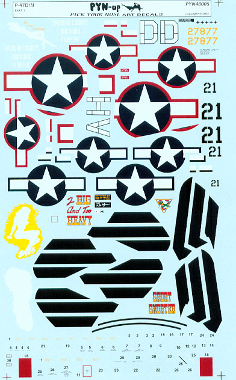

Tamiya 1/48 Republic P-47D Thunderbolt
Kit #61090 MSRP $41.00
Images and text Copyright 2004 by Matt Swan
Developmental History
In the entire history of military aviation, there has never been an airplane that could match the P-47 Thunderbolt for ruggedness and dependability. The pilots who flew it into combat called it "The Unbreakable" and "The plane that can do anything." They were not far from wrong. The P-47 Thunderbolt was, in a very indirect sense, a gift from Russia to the United States. The aircraft was the product of two Russian immigrants, Alexander De Seversky and Alexander Kartveli, who had left their homeland to seek their future in America.
The story of the P-47 began in the summer of 1940. At that time Republic was building the P-43 Lancer and had plans to produce a lightweight fighter designated the P-44 Rocket. In view of combat experience in Europe, however, the Air Corps decided that if the United States became involved in the war something larger and better than the P-44 would be required. Kartveli, who was now Republic's chief engineer, quickly prepared a rough sketch of a new fighter. It was a daring concept with the fuselage designed around the new Pratt & Whitney Double Wasp, 2,000 hp XR-2800-21 eighteen-cylinder twin bank radial engine combined with a high performance supercharger. This power plant by itself weighed more than a ton. It was largest and most powerful aircraft engine ever developed in the United States. He also envisioned that his plane would have eight .50-caliber machine guns and enough armor plating to protect the pilot from every direction. These features added up to an airplane weighing about 4,000 pounds more than any existing single-engined fighter.
The conventional three-bladed propeller could not efficiently utilize the power of the new engine and a four-bladed propeller was adopted. Incidentally, the P-47 served as the first test stand for this propeller. Although this propeller was an admirable solution to the power gearing of the engine, there remained the problem of providing sufficient ground clearance for its 12-foot diameter. Republic had to design a telescopic landing gear, which was nine inches shorter when retracted than when extended.
The heavy fighter was not an instant winner with the pilots that initially took it to combat. Low-altitude air-to-air combat was a problem until a paddle blade propeller was added, but high-altitude combat was a different story. The short range of the P-47 was a distinct handicap until the auxiliary fuel tanks were added. When it came to strafing and dive-bombing, the big P-47 excelled. Following D-Day, in France the Thunderbolts performed magnificently in ground support until the end of the war. P-47's often came back from combat shot full of holes, their wings and control surfaces in tatters. On one occasion a Thunderbolt pilot, Lieutenant Chetwood, hit a steel pole after strafing a train over Occupied France. The collision sliced four feet off one of his wings--yet he was able to fly back safely to his base in England. P-47's flew more than 546,000 combat sorties between March 1943 and August 1945, destroying 11,874 enemy aircraft, some 9,000 locomotives, and about 6,000 armored vehicles and tanks. Only 0.7 per cent of the fighters of this type dispatched against the enemy were to be lost in combat.
Few pilots were neutral about the Thunderbolt; they either hated it or loved it. On the negative side, there was the unpleasantly long take-off run, and the P-47 was not particularly maneuverable, though it was surprisingly agile at high altitudes. One Thunderbolt pilot compared it to flying a bathtub around the sky. A dead-stick landing with the P-47 was likely an unpleasant experience. On the positive side, it was rugged and well armed. It was a stable gun platform and its eight Brownings could pour out a heavy volume of lead, and pilots reported targets unlucky enough to be caught in a P-47's crosshairs as simply exploding or disintegrating. The Thunderbolt could also drop like a brick, which was an advantage in air battles. Luftwaffe pilots would find out that trying to break off combat and dive away was sheer suicide when fighting a Thunderbolt. The P-47 could easily reach 550MPH in a dive.
Though it was an excellent airplane in its initial �B� version, several improvements were made as production continued, each improvement adding power, maneuverability and range. As the war progressed, the "Jug," as it was affectionately called, gained a reputation as a reliable and extremely tough airplane, able to take incredible amounts of damage and still return its pilot home safely. P-47s were also used during the war by the air forces of Brazil, England, France, Mexico and the Soviet Union. The final version, the P-47N, was built primarily for use against the Japanese. The fastest model was the XP-47J, which did not go into production. Following the war, the Jug served for nine more years in the US, flown by the Air National Guard. It continued to serve for many additional years with the air forces of over 15 nations around the world.
The Kit
I have done a few single engine Tamiya kits and most of them like the Mustang and the Zero are actually fairly simple kits with few parts in comparison to some larger multi-engine kits. This kit falls into the more complex end of the spectrum. It is readily apparent that Tamiya designed the molds to give as much versatility as possible. For example, the fuselage is a four-piece assembly with two of those being the tail fin and top fuselage area. This is most likely designed to give them the ability to produce an �M� or �N� version with little modification to the masters. The kit includes four, count them, four different propellers; three of which are paddle blade types (Hamilton Standard or Curtiss Electric) and one is a narrow chord blade like you would find on a �B� or early �C� model.
Just to shed a little light on the whole prop thing, the P-47 used 4 different kinds of propellers throughout its service life. They originally used the Curtiss Electric prop with the narrow blades (sometimes referred to as the "toothpick" prop). All Curtiss Electric props can be identified as such by the pointed hub. The Hamilton Standard propellers had a blunt, more rounded hub. Around mid to late 1943, the poor climbing characteristics of the Jug were attempted to be alleviated by the introduction of the Hamilton Standard "paddle blade" prop, as well as Curtiss Electric coming out with their own paddle blade props with a symmetrical profile. Later, in 1945, C.E. came out with a paddle bladed prop with asymmetrical blades. These were used on the P-47 "N" model only. The P-47D Razorback and Bubbletop models could use any one of the three others (I don't believe any Bubbletops ever used the "toothpick" props), as they were interchangeable.
So, enough of that, let's get back to the kit. Upon opening this box of goodies we have 3 poly bags containing five sprues of injection molded pieces done in a medium gray plastic that appears to be of good quality. Two of these trees are devoted to weapons loads and landing gear pieces. On the other sprues we have twelve pieces that comprise a well-appointed cockpit, a two-piece main wing spar, a seven-piece engine assembly and a choice of open or closed cowl flaps. The lower wing panels feature two separate panels in each wing that may allow for other kit modifications or be useful in a super-detail application. The flaps are real pieces of work also with individual plastic cast hinges for a realistic extension. The landing gear is well detailed and so too is the interior areas of the landing gear bays as can be seen in the picture to the right. If it has not become apparent to you yet, this box is full of well-made detail pieces giving plenty of construction options. Overall there are 160 gray plastic pieces here featuring finely engraved panel lines and rivet detail. There is no flash evident on any parts nor obvious injector pin markings or sink marks.
We are not done yet. There is a small sprue of clear parts that include two different reflector gun sights, one of which seems to be for a future version, a landing light lens and wing tip marker lenses. On this sprue we have seven pieces. Factor in the two poly caps provided for the propeller and you have 169 parts in the box.
You can click on the above images to view larger pictures
Decals and Instructions
 Tamiya has provided us with a really nice instruction packet for this kit. We get a fourteen-inch tall ten-panel foldout that begins with a nice little historical background section done in four different languages. A fairly comprehensive color chart that lists colors by Tamiya color codes and color name only follows this. There are fourteen exploded view construction steps and a weapons load-out chart. There are plenty of color call-outs throughout the instruction packet. Three panels are devoted to decal placement and exterior color schemes.
Tamiya has provided us with a really nice instruction packet for this kit. We get a fourteen-inch tall ten-panel foldout that begins with a nice little historical background section done in four different languages. A fairly comprehensive color chart that lists colors by Tamiya color codes and color name only follows this. There are fourteen exploded view construction steps and a weapons load-out chart. There are plenty of color call-outs throughout the instruction packet. Three panels are devoted to decal placement and exterior color schemes.
There is no shortage of decals in this kit. Tamiya has provided complete markings for two different aircraft. There are complete service stencils, invasion strips are provided as decals and so are the pilot�s seatbelts. The checkerboard pattern for the nose of one aircraft is provided as a three-part decal and the �Kokomo� eagle nose art includes a white backing decal. Print registry looks to be right on the mark and color density looks good. To the left is a smaller image of the kit decals you can click on to view a full sized picture.
Conclusions
This really is a very nice kit. The parts are well engineered, feature a great level of detail, fine, crisp recessed panel lines. The kit decals are all inclusive for the two options provided and the directions seem to leave nothing out. The P-47 has got to be one of the most popular single engine war birds of the period and as a result there is an abundance of aftermarket material available � too much to list here. One thing that I do want to point out is a set of decals from Cutting Edge. This set is the limited edition P-47D �Big Jugs� part 2 which offers nude nose art for three different birds. This is the sheet to the right above and you can click on that one for a full-sized view as well. And down below are the two sheets that comprise the Pyn-Up nose art for the �Jug�. Now these are for either the razorback �D� model or a late model �N� which would require a modification to the fuselage fin � not too difficult.. Bottom line is �get this kit� you can�t lose.



 Tamiya has provided us with a really nice instruction packet for this kit. We get a fourteen-inch tall ten-panel foldout that begins with a nice little historical background section done in four different languages. A fairly comprehensive color chart that lists colors by Tamiya color codes and color name only follows this. There are fourteen exploded view construction steps and a weapons load-out chart. There are plenty of color call-outs throughout the instruction packet. Three panels are devoted to decal placement and exterior color schemes.
Tamiya has provided us with a really nice instruction packet for this kit. We get a fourteen-inch tall ten-panel foldout that begins with a nice little historical background section done in four different languages. A fairly comprehensive color chart that lists colors by Tamiya color codes and color name only follows this. There are fourteen exploded view construction steps and a weapons load-out chart. There are plenty of color call-outs throughout the instruction packet. Three panels are devoted to decal placement and exterior color schemes.
{kind=link}
{kind=link}
{kind=link}
{kind=link}
{kind=link}
{kind=link}